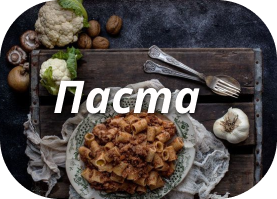
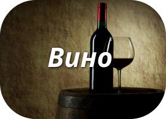
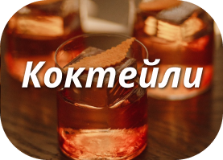

Сочетай.
Пробуй.
Наслаждайся.
Простые правила сочетания вина и едым
- Сладкое к сладкому
Главное не переборщить со сладостью десерта. Старайтесь сочетать пары так, чтобы вино было чуть слаще Вашего
блюда. В
противном случае, рискуете «потерять» ценность напитка. Как понять что вино окажется слаще? Просто не
выбирайте
приторные десерты. Пусть это будмут шоколадные маффины и бисквиты, фруктово-ореховые пироги.
- Жирное мясо — танинное красное
Все просто. Чем более у нас жирная пища, тем более танинным и структурированным должно быть наше вино. С
одной стороны,
насыщенное вино подчеркнет вкус мяса. С другой — сытное и жирное блюдо смягчит мощный танин и облагородит
вкус. С таким
мясом отлично пойдет и, так называемое, оранжевое вино.
- Соль — кислота
Чем более соленая пища, тем кислотнее должно быть Ваше вино. Дело в том, что восприятие кислотности и
солености
нейтрализуют друг друга — все просто! Пример: азиатская кухня и соевый соус отлично сочетаются с Рислингом,
а пармезан —
с Кьянти.
- Фруктам — фрукты
Гевюрцтраминер, Мускат, Вионье, Рислинг — вот примеры белых вин с сильно развитой фруктовой ароматикой.
Попробуйте
сочетать их с блюдами из свинины, курицы и утки, приготовленными с различными фруктовыми компонентами.
- Универсальные вина
Тот случай, когда лень думать и выбирать. Из белых, определенно таким вином будет очень «гибкий» сухой или
полусухой
Рислинг, но никак не Шардоне. Красные вина должны или отличаться высокой кислотностью (Кьянти и Бургундский
Пино Нуар)
или быть фруктовыми и малотанинными (Примитиво, Зинфандель, вина Южной Роны)
- Нежному — нежное
Острое, пикантное и пряное блюдо лучше сочетать с подобными винами. Пино Нуар просто потеряется на фоне
карри, будет
скучным и водянистным, а вот Шираз подойдет как нельзя лучше.
- Контраст
Играйте на контрасте, иногда можно! Например, тонкое, кислотное и минеральное игристое вместе с блюдами из
морепродуктов в сливочном соусе, вместо более очевидного, насыщенного и выдержанного в дубе Шардоне.